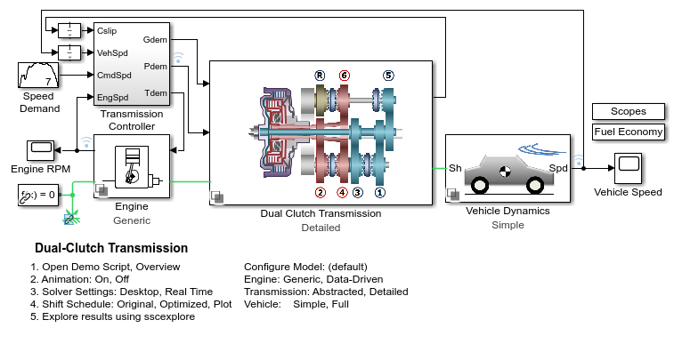
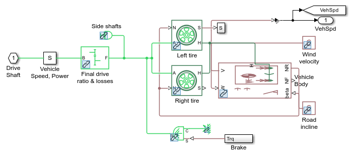
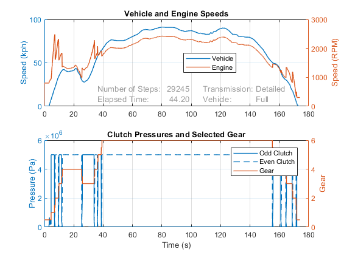

Dual Clutch Transmission
This example shows a vehicle with a five-speed automatic dual-clutch transmission. The transmission controller converts the pedal deflection into a demanded torque. This demanded torque is then passed to the engine management. The pedal deflection and the vehicle speed are also used by the transmission controller to determine when the gear shifts should occur. Gear shifts are implemented via the two clutches, one clutch pressure being ramped up as the other clutch pressure is ramped down. Gear pre-selection via dog clutches ensures that the correct gear is fully selected before the on-going clutch is enabled.
This model can be configured for fixed-step simulation, making it suitable for hardware-in-the-loop testing.
Contents
Model
Abstract Transmission Subsystem
Detailed Transmission Subsystem
Full Vehicle Subsystem
Shifting Logic Subsystem
Fuel Economy Subsystem
Simulation Results from Simscape Logging
The plots below show the engine and vehicle speed as it accelerates through the first three gears in the dual-clutch transmission. The half-gear states indicate gear shifts are taking place by engaging and disengaging the dual clutches.
Elapsed time for Dual_Clutch_Trans = 81.3319
Abstract Transmission, Simple Vehicle
Elapsed time for Dual_Clutch_Trans = 15.8807